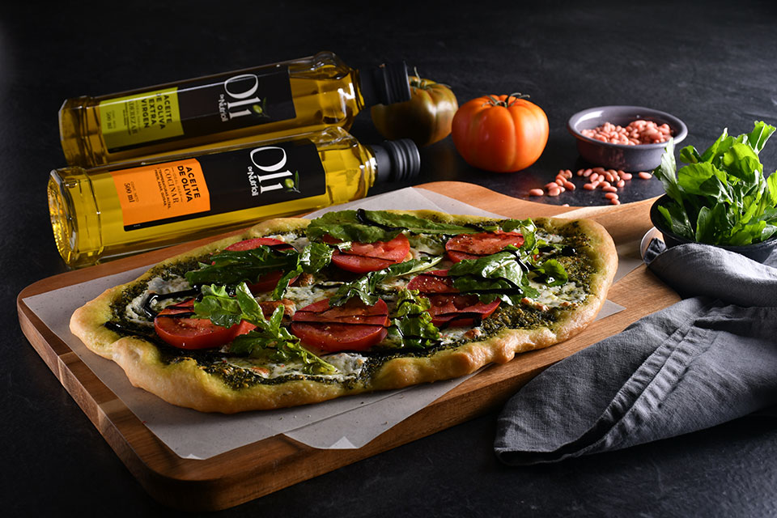

Pizza pesto margarita
Recetas > Pizza pesto margarita
Pizza pesto margarita
Alimento estrella arúgula: La arúgula es rica en antioxidantes, fibra que mejora la digestión, además de hierro y folatos que favorecen la circulación.
Un delicioso platillo para tus comensales sin dejar de lado los beneficios para su organismo.
Ingredientes
- 250 g de harina
- 2 de levadura
- 3/4 de taza de agua.
- 3 cucharadas de aceite de oliva.
- 5 g de sal.
Para la masa:
- 50 g de hojas de albahaca
- 1/2 de taza de aceite de oliva.
- 1/2 de taza de queso parmesano.
- 25 g de piñones tostados.
- 4 dientes de ajo.
- 1 pizca de sal de mar.
Para el pesto:
- 200 g de queso mozzarella reducido en grasa.
- 1 jitomate bola rebanado.
- 4 tazas de arúgula.
- 1/2 taza de vinagre balsámico.
- 1/2 taza de aceite de oliva.
- 2 cdas. de crema de vinagre balsámico.
- Sal y pimienta.
Para el topping:
Valor nutritivo por porción
- 539 kcal
- 43 de grasas
- 15 de proteínas
- 23 hidratos de carbono
Preparación
- Mezcla los ingredientes para la masa en un tazón y deja reposar por 2 horas. Pasado este tiempo mezcla y dejas reposar nuevamente. Repite cada 2 horas de 3 a 4 veces el mismo procedimiento.
- Divide la masa en dos partes, forma una bola con cada porción, coloca en un tazón y barniza con aceite de oliva para que no se pegue, cubre y refrigera toda la noche.
- Al día siguiente extiende la masa con las manos, estira y forma las pizzas sobre las charolas para el horno.
- Para hacer el pesto muele en un procesador la albahaca, el piñón, el ajo, el queso parmesano y la sal. Vierte Oli de Nutrioli® Aceite de Oliva en forma de hilo y poco a poco hasta quedar una mezcla homogeneizada.
- Unta las pizzas con el pesto, agrega el queso mozzarella, coloca las rebanadas de jitomates sobre las pizzas, hornea a 220° C por 20 minutos y retira del horno.
- En un tazón mezcla la arúgula, el vinagre balsámico y aceite extra virgen, sazona con sal y pimienta. Agrega la crema de vinagre balsámico y finalmente la arúgula marinada. Sirve de inmediato.